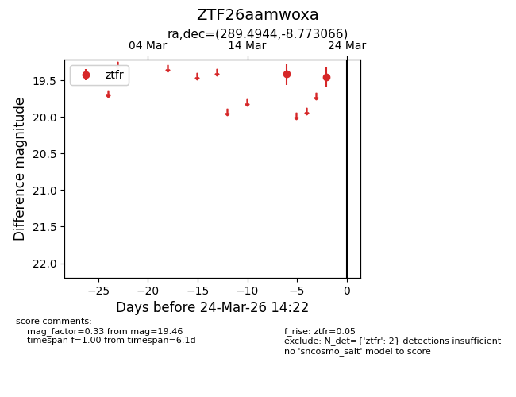
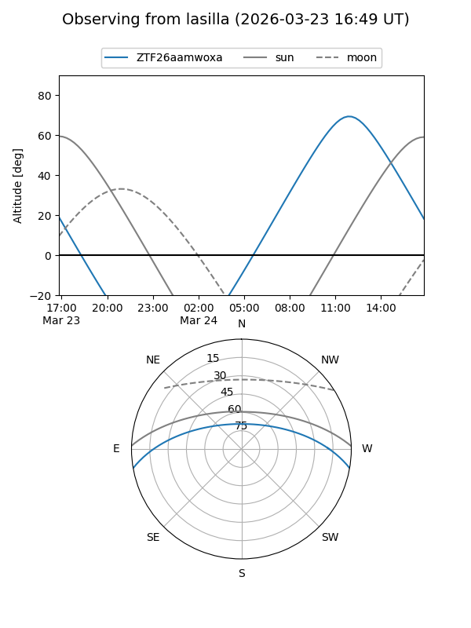
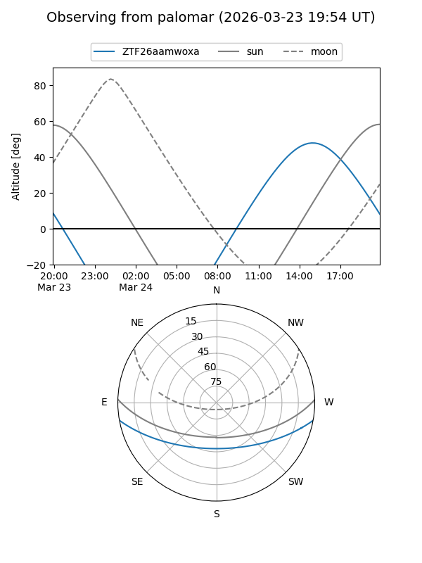

ZTF26aamwoxa
Target ZTF26aamwoxa at 2026-03-24 14:25
Aliases and brokers:
FINK: link
Lasair: link
ALeRCE: link
alt names
ZTF26aamwoxa (ztf,fink_ztf)
Coordinates:
equatorial (ra, dec) = 289.4944,-8.77307
equatorial (HMS+DMS) = 19:17:58.66,-08:46:23.04
galactic (l, b) = (28.0601,-9.85618)
Flags:
Photometry:
last ztfr=19.46
2 ztfr detections
Lightcurve

Visibility


Additional plots